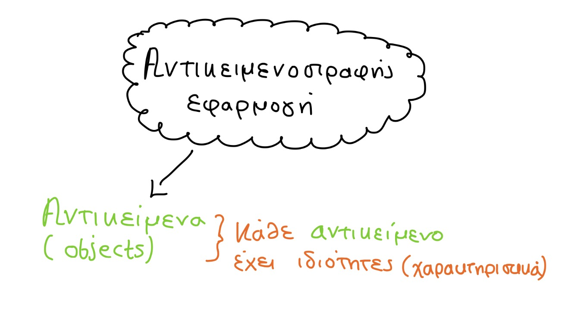
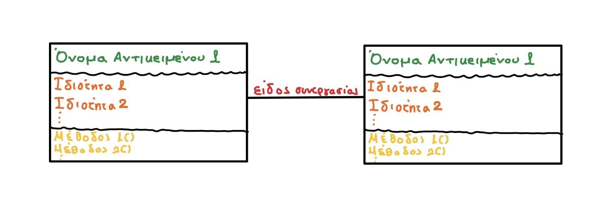
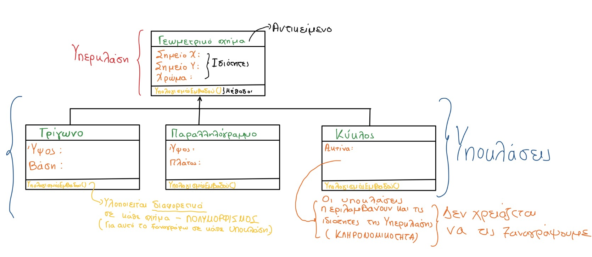

Αντικειμενοστραφής προγραμματισμός
Αντικειμενοστραφής εφαρμογή - Τα γενικά

Τα χαρακτηριστικά του αντικειμενοστραφούς προγραμματισμού πηγάζουν από τον καθημερινό φυσικό μας κόσμο.
Βασικά στοιχεία κάθε αντικειμενοστραφούς εφαρμογής
- τα αντικείμενα που συμμετέχουν με βάση τον ρόλο τους στο συγκεκριμένο σενάριο,
- οι ιδιότητες κάθε αντικειμένου, δηλ. τα σχετικά με το συγκεκριμένο πρόβλημα χαρακτηριστικά
του
- οι υπηρεσίες που προσφέρει ή οι ενέργειες που υλοποιεί κάθε αντικείμενο (μέθοδοι) προς
αξιοποίηση από άλλες, ώστε να αναπτυχθούν οι απαραίτητες συνεργασίες μεταξύ των αντικειμένων για την επίλυση του προβλήματος.
Σημείωση: Οι ενέργειες στον αντικειμενοστραφή προγραμματισμό αναφέρονται και ως μέθοδοι.

Οι 4 αρχές του αντικειμενοστραφούς προγραμματισμού
- Ενθυλάκωση
- Αφαίρεση (κλάσεις - υποκλάσεις)
- Κληρονομικότητα
- Πολυμορφισμός
Εφαρμογή
Στην παρακάτω εικόνα μέσα από το παράδειγμα των γεωμετρικών σχημάτων ξεκαθάριζουμε πως λειτουργούν οι αρχές του αντικειμενοστραφούς προγραμματισμού

Σημειώσεις επί της εικόνας
- Η μέθοδος ΥπολογισμόςΕμβαδού() υπάρχει και στην υπερκλάση και στις υποκλάσεις, καθώς η ενέργεια του υπολογισμού του εμβαδού υλοποιείται με τρόπο διαφορετικό για κάθε σχήμα.
- Δεν χρειάστηκε να ξαναγράψουμε τις ιδιότητες Σημείο Χ, Σημείο Υ και Χρώμα στις υποκλάσεις καθώς κληρονομήθηκαν από την υπερκλάση(βλ. το βελάκι που συνδέει τις υποκλάσεις με την υπερκλάση).
- Μια κλάση Α μπορεί να είναι έγκυρη υποκλάση της Β αν έχει νόημα να πούμε «ένα Α είναι ένα (is_a) B»